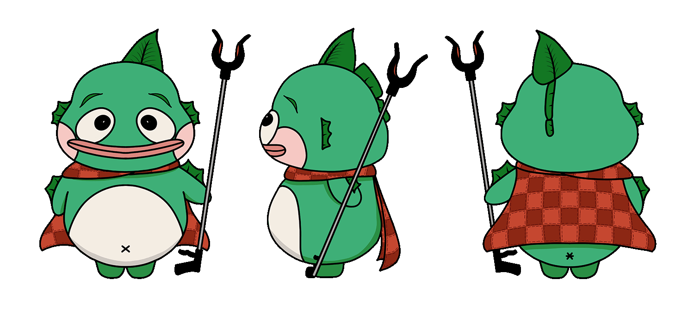
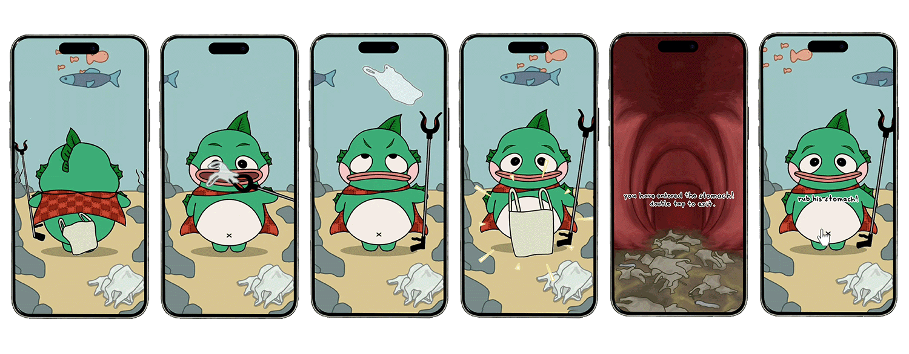

THE APPROACH
Chompie is a Value-Based Avatar designed for 7-Eleven—a fish hero that consumes plastic in the ocean to protect marine life from pollution. This character embodies sustainability in a playful and approachable way, encouraging more conscious consumer behaviour. The colour palette combines green, representing sustainability, and red, symbolising the strength of a hero. As complementary colours, they create a strong visual contrast that enhances the character’s presence.
To further engage users, an interactive webpage featuring animated sequences of Chompie was developed using p5.js, adding an element of play and immersion to the experience.

TOOLS
Adobe Photoshop
p5.js